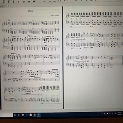
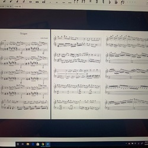
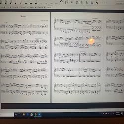
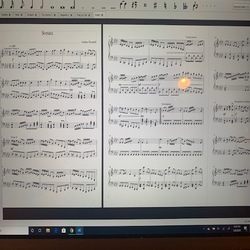
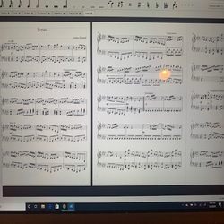

Aodhan Thornhill
Hello, my name is Aodhan Thornhill. I am currently a third-year music composition major at the University of California: Riverside. I am really interested in creating music for video games using electronic sounds. I develop my own sounds in a program known as Ableton. In this program I am able to develop any sound that I can think of. On top of that, I can apply effects to these sounds which further develops them. These sounds can then be applied to make an entire song that either interacts with a video game or stans alone by itself. I am also in the progress of learning how to code the music into a video game.
Before I became involved with electronic music, I played a lot of different instruments such as the violin, piano, and various percussion instruments. I have played violin for 14 years and have auditioned for and was selected for several prestigious ensembles. Some of these ensembles include the Fontana Unified School District Honor Orchestra, the San Bernardino County Honor Orchestra, and the Redlands Youth Symphony Orchestra. As for percussion, I have been playing for seven years and have gotten quite good at it. I was also selected for several prestigious ensembles as a percussion player. Some of these ensembles include the Fontana Unified School District Honor Band, the San Bernardino County honor band, the John Phillip Sousa Honor Band at Riverside Community College, and the Tournament of Roses Parade Honor Band. As for piano, I am not so experienced with it because I have been playing it for about 3 years. In this time though, I have written several compositions for piano that I have performed.
While at the University of California: Riverside I have learned many compositional techniques that help me in the field of electronic music. Class such as Music Theory, Counterpoint, Form and Analysis, and even Orchestra. I have also learned a wide variety of techniques while attending club meetings at EARS. EARS stands for Experimental Acoustic Research Studio and is located just outside of the University of California: Riverside. EARS is a place where all music majors and people who have a love for music can come to compose music, learn new techniques for composing music, and gain feedback about compositions from grad students and professors. After our club meetings everyone is free to hang out and compose music, talk with each other, and have a safe place to study. It was at EARS where I first learned how to work with electronic sounds and that is when I became interested in composing for video games. I have always had a love for video games and their music, but one TA at EARS was able to show me how to create compositions for video games. I still regularly attend these meetings at EARS because I do not fully understand the ways of creating video game music. However, at each meeting I attend, I gain more knowledge that I did not have before the previous meeting.
Experience
Producer
• Worked with multiple students on projects
• Sound Design in Ableton
• Held talks about composing
Piano Instructor
• Responsible for teaching students the proper technique of playing piano
• Taught students Music History
Lead Admin
• Uses Google sheets to complete tasks
• Communicates with Employees
• Manages Saftey Paperwork
• Knowledge of Microsoft Excel
Education
UC Riverside
Portfolio


 



